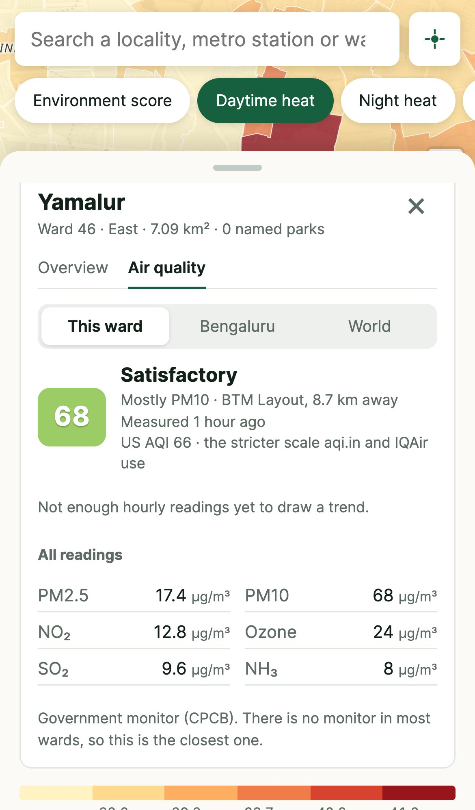
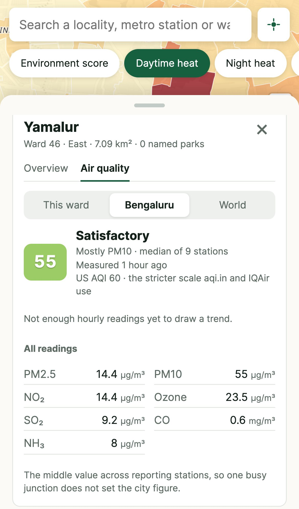
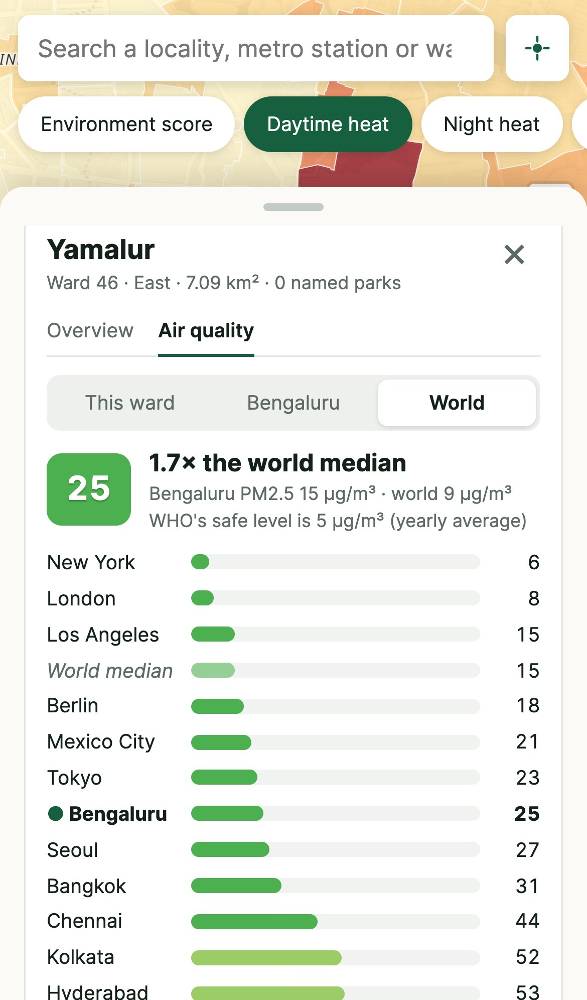

What a rental listing won’t tell you: how hot an area gets, how green it is, whether it floods, what is in the air, and what sits next door. Ward by ward, for the whole city, free to use.
First public version in one working day, 12 October 2026. Extended on 14 and 16 October. Built in conversation with Claude Code.
1 · The idea
Property sites tell you the rent. Nobody tells you the climate.
When people choose where to live in Bengaluru, they can look up rent ranges, flat sizes and landlord reviews in seconds. They cannot easily find out how hot the area gets, how many trees it has, whether it is near a dump or an industrial belt, or whether it sits on low ground that floods.
“Nobody is telling what the climate is out there: how much heat it produces, how many trees it has, how many lakes, what the CO₂ level is. I just want to make people aware.” The brief that started the project, in the founder’s words, lightly edited
The idea is a single public map of Bengaluru where anyone can pick an area and see its environmental picture: heat, greenery, parks and lakes, flood exposure, industry, waste sites, traffic and air. The first audience is people renting or buying a home. The wider aim is awareness: making the environmental differences between neighbourhoods visible to everyone who lives in them.
What was asked for at the start
A map at the level of a ward or locality, not the whole city as one number
Heat: which areas run hot, which stay cooler, and why
Greenery, parks, trees and lakes
Industrial areas, sewage and dumping grounds
Traffic and noise
CO₂, methane and other gases in the air
Past floods, fires and other disasters
Real data from real sources, kept up to date
Most of this now exists in a working form. A few items turned out to have no trustworthy public data yet; those are listed plainly in section 8.
369wards: the whole Greater Bengaluru Authority area, 2025 boundaries
17map layers to switch between
1,128localities and metro stations searchable
15open data sources combined
2 · What exists today
A live website that works on a phone
Open the link, search for a locality or metro station, or tap “my area”. The map opens the ward you asked about and shows every figure next to its rank among all 369 wards, so “20.1°C at night” comes with “1st best of 369”.

On a phone: the full-screen map; a ward profile with every figure ranked; and the ward’s air quality tab, from the nearest government monitor.
What you can do with it
Compare areas on seventeen layers: environment score, daytime and night heat, low-lying land, flood spots, storm drains, lost wetland, tree cover, greenery, parks, lakes, industry, major roads, power lines, distance to a dump, crowding and light at night
Search 1,054 localities and 74 metro stations by the names people actually use
Find a home near work: enter an office and get wards within reach ranked by environment, each with what is good, what is not and how to live with it
Check the air for the ward, the whole city and other cities around the world (section 3)
See the sources of trouble: landfills, dumps, sewage plants, BBMP’s listed flood spots, high-tension lines and lakes lost since 1984
Change the view: light, streets, dark, satellite and night lights, and a 3D mode where each ward rises as a block
3 · Air quality, three ways
This ward, Bengaluru, and the world
The ward profile keeps air to one line: an index for this ward and one for Bengaluru. Tapping either opens the Air quality tab with the detail, so the profile itself stays uncluttered.


How to read it
This ward uses the nearest government monitor that measures dust and fine particles, with its distance shown. Most wards have no monitor of their own.
Bengaluru is the middle value across the reporting stations, so one busy junction cannot set the city figure.
World compares Bengaluru with Indian and foreign cities and the world median, all on PM2.5, from official monitors only.
Every reading says when it was measured. An hourly trend builds up from 16 October.
One index, explained
The main number is India’s official Air Quality Index, as CPCB and the news use it. Under it, one small line gives the US AQI, because apps such as aqi.in and IQAir use that stricter scale and show worse numbers for the same air. At Bengaluru’s 14.4 µg/m³ of PM2.5 on 16 October, India’s index says 24 (Good) and the US index says 60 (Moderate). Showing both side by side explains the gap without asking people to choose.
Why the readings are now live
On launch the government stations reached through OpenAQ were days behind, and on 13 October that feed stopped altogether. The map now reads CPCB’s own hourly feed on data.gov.in. That feed turned out to report each pollutant as an index score rather than an amount, so the site converts it back before working out the index. It also refuses requests from outside India, so the site’s server runs in Mumbai.
3D view of daytime heat across the 369 wards. Each ward is a block; the hottest stand tallest. It is a graphic of the data, not a model of the terrain.Low-lying land: the share of each ward sitting less than 3 m above the drainage line it would flood from. The belt around the eastern and southern lakes stands out.
4 · What the map already shows
The differences between neighbourhoods are large
7.1°Cgap in summer surface heat between the coolest and hottest ward (36.2°C to 43.3°C)
59%of Yamalur ward is low-lying land, yet BBMP lists no flood spot there
60%tree cover in Sadashiva Nagara; Padarayanapura has almost none
9live government air monitors for 369 wards
Heat follows concrete. The hottest wards on a summer morning are dense, built-up ones such as Vibhootipura, Kaveripura and Srigandada Kaval. The coolest sit beside lakes and tree cover, such as Bilekahalli and Sadashiva Nagara. Industry is concentrated too: three-quarters of Shivapura ward is industrial land.
Trees and crowding go opposite ways. Padarayanapura is the most crowded ward, about 109,000 people per km², and has almost no tree cover. Sadashiva Nagara and Kuvempunagara are around 60% trees.
Flood exposure is not where the official list says. Yamalur, beside Bellandur lake, has no BBMP flood spot, but 59% of it is low-lying and 15% of it was lake or marsh in 1984, the most of any ward.
One area can be good and bad at once. The same Yamalur is the coolest ward in the city at night and 12th best overall. A single “good area / bad area” label hides exactly what a home-seeker needs to know.
Yamalur ward on the satellite view, with its profile open: coolest at night of all 369 wards, but 59.4% low-lying and the most lost wetland in the city.
5 · How the idea became real
Three working days
The build ran as a conversation: the founder described what was wanted and reacted to each version; Claude Code found the data, wrote the software, tested it and put it online. Corrections are marked in red.
12 October: from an idea to a public website
A first map.Every ward mapped with satellite heat, greenery, parks, lakes, industry, roads and waste sites, plus search by 1,000+ localities and metro stations.
Flood and air data, honestly sourced.A commercial flood map and a popular air-quality site were suggested. One is private data and the other blocks automated access, so neither was copied. BBMP’s public flood lists and government monitors were used instead, each reading labelled with its age.
Phone version, sharper satellite data, 3D.Heat improved from 1 km to 30 m and greenery from 250 m to 10 m through Google Earth Engine, plus a low-lying land layer. Fixed taps on phone dots and 3D picking the wrong ward.
14 October: deeper layers and a home finder
Lost wetlands.Lakes and marshes that held water in 1984 and have since been built over or dried out, as a map overlay and a ward figure.
Trees, crowding, night lights, power lines.Each source tested against what is known on the ground; two tree-cover datasets that read near zero in leafy Malleswaram were rejected.
Find a home near work.Enter an office; get nearby wards ranked by environment, with the trade-offs spelled out.
16 October: correct boundaries and live air
The right ward map.A blank pocket inside Kogilu ward exposed that the map used the old 243-ward BBMP boundaries. It now uses the Greater Bengaluru Authority’s 2025 delimitation, 369 wards in five corporations, with every figure recomputed.
Live air: ward, city and world.CPCB’s hourly feed replaced the stalled one, shown on India’s scale with the US figure alongside, behind a compact air line that opens a detail tab. A first world pull included cheap sensors reading 982 in Mumbai and 0 in Sydney; only official monitors are used now.
6 · Where the data comes from
Fifteen open sources, each credited on the site
What it shows
Source
Detail and freshness
Ward boundaries
Greater Bengaluru Authority 2025 delimitation, December 2025 map on OpenCity
369 wards in five corporations
Daytime heat
Landsat 8 and 9, via Google Earth Engine
30 m. Nine cloud-free passes, March to mid-May 2026
Night heat
NASA MODIS Aqua
1 km. Summer 2026, about 1:30 am
Greenery
Sentinel-2, via Google Earth Engine
10 m. 33 low-cloud images, January to April 2026
Tree cover
ESA WorldCover
10 m, 2021
Low-lying land
MERIT Hydro
90 m. Height above the nearest drainage line
Lost wetland
JRC Global Surface Water with Google Dynamic World
Water from 1984 to 2021, today’s land cover
Crowding
GHSL population grid (EU JRC)
100 m, 2025. Modelled, not a census
Light at night
NOAA VIIRS
2025 annual average
Flood spots
BBMP flood lists, published on OpenCity
375 locations. Public domain, undated
Parks, lakes, industry, roads, drains, power lines, waste sites, places
OpenStreetMap
As complete as volunteer mapping
Bengaluru air
CPCB / KSPCB monitors via data.gov.in; community sensors via OpenAQ
Hourly; 9 government stations reporting on 16 October
World air
CPCB for Indian cities; reference-grade monitors on OpenAQ elsewhere
Hourly; about 3,170 monitors worldwide
Weather
Open-Meteo
Air temperature and humidity at the ward
The environment score
Each ward is ranked against the others: heat 30%, greenery 25%, flood exposure 15%, parks and lakes 10%, major roads 10%, industry 10%. The weights are a first judgement, not a standard, and the site says so.
How it is put together
A data script works out every figure for every ward; the website draws the map in the browser. Air readings come through a server function in Mumbai so the access keys stay private, and an hourly job records them for the trend and the world comparison. Hosting is on Vercel; satellite processing on Google Earth Engine, non-commercial.
7 · The impact it can create
Making the invisible part of a neighbourhood visible
The map is newly public, so what follows is what it makes possible, not results already achieved.
People renting or buying a home
A family can check, before signing, whether an area is one of the hottest in the city, sits on low ground, or is next to a dump, and find wards near work that do well on what matters to them.
Residents and welfare associations
A ward that is hotter, less green or more flood-exposed than its neighbours now has numbers and a map to show when it asks for trees, drain repairs or a park.
Health and daily life
Heat and bad air fall hardest on children, older people and outdoor workers. Seeing which wards stay hot at night, and what the nearest monitor reads now, helps people understand their own risk.
Journalists, students and researchers
The city’s environmental inequality becomes something anyone can open and quote, ward by ward, on the current boundaries, with the sources listed.
The city itself
The gap between BBMP’s flood list and the low-lying land layer is the kind of finding a public map surfaces. So is how thin monitoring is: 9 live air stations for 369 wards.
The property market
If buyers start asking about heat and flood exposure, builders and landlords have a reason to care about trees, drainage and open space. That is a slow effect, and the one with the widest reach.
What would turn potential into real impact
People finding it: sharing in resident groups, housing forums and local media
Trust: keeping every figure sourced and every weakness stated, as the site does now
Staying current: the air now updates hourly; the satellite layers still need scheduled refreshes
Finer detail: locality and street level, where housing decisions are actually made
8 · Honest limits and what comes next
What it does not do yet
Limits today
Ward level only. Conditions change street by street, especially flooding. A ward figure is an average.
Few air monitors. Nine government stations cover 369 wards, so a ward’s “nearest station” can be 10 km away.
World air is PM2.5 only, and cities with no recent official reading (on 16 October: Dubai, Beijing, Jakarta, Lagos, Paris, Sydney) are left out.
Ward names to confirm. Two published versions of the 2025 ward map differ on 13 names and two ward shapes; the December 2025 one is used and has not yet been checked against the official notification.
CO₂ and methane are not shown. No public source measures them by neighbourhood.
Flood layers show exposure, not history. There is no dated record of past floods or fires yet.
No measured noise or traffic. Major-road density stands in for both.
Satellite figures are a snapshot of summer 2026 and do not refresh automatically.
Non-commercial data terms. Earth Engine and some datasets are free for non-commercial use only.
Next steps, in order
Confirm ward names against the official GBA notification
Heat and greenery as zoomable imagery, street by street, instead of one colour per ward
Fire history from NASA’s fire detection service, and dated flood records
Real traffic in place of the road-density stand-in
Scheduled refresh of the satellite layers
Satellite NO₂ and methane for a daily, city-wide view of the air
Kannada language support and shareable links to a ward
Decisions for the founder
Will the site stay free and non-commercial? This decides which data sources can be used.
Who should see it first: renters, resident groups or the press?
Should the single score stay, or should the layers stand on their own?
Figures in this note are taken from the live site on 16 October 2026; air readings change every hour. Data credits: Greater Bengaluru Authority and BBMP via OpenCity, NASA / USGS Landsat and MODIS, Copernicus Sentinel-2, ESA WorldCover, MERIT Hydro, EC JRC Global Surface Water and GHSL, Google Dynamic World, NOAA VIIRS, OpenStreetMap contributors, CPCB / KSPCB via data.gov.in, OpenAQ, Open-Meteo. Satellite base map: Sentinel-2 cloudless by EOX.